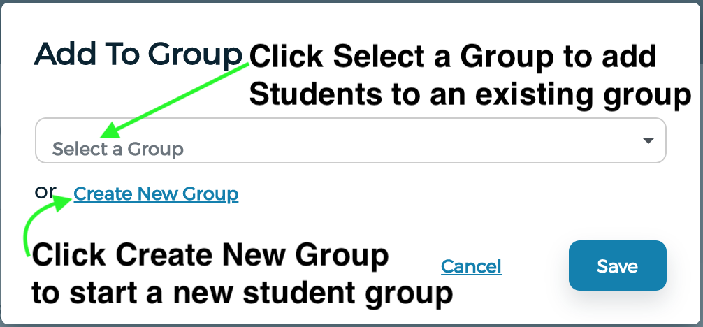
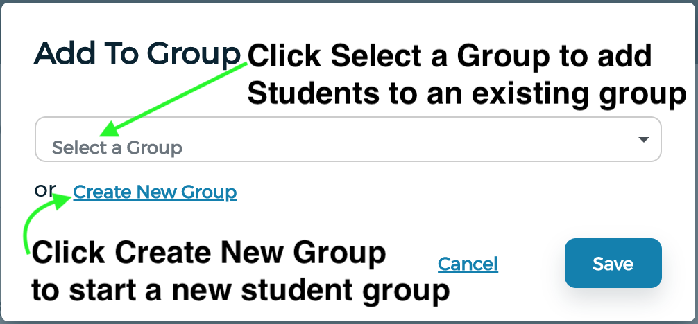

How can teachers use data to inform classroom instruction
Office of Grants, Research, Accountability, & Data
Learning Objectives
- Define what the dashboard is and can do
- Locate help within the dashboard and from our office
- Identify available data and tools in the dashboard
- Compare how filters affect dashboard content
- Create and share student groups
- What do you imagine when you think of a dashboard?
- What type of information can you get from your dashboard?
- How often is the information in your dashboard updated?
What is the data dashboard?
- Integrates data from Infinite Campus, MUNIS, and more...
- The data are all updated nightly
- In addition to current data, historical data is also available
- Gives you the tools you need to analyze student data
Our Support Portal
- In a new browser window - or tab - go to:
- https://bit.ly/2NTj04d
- Login using Google
- Click on the box titled "Data Central"
- Click on any of the four request type options.
- Fill out and submit a request.
In Dashboard Content


Identifying Available Data
Assessment Inventory Activity


- Are all assessment data available in the dashboard?
- What happens when you change the Students View filter? Why?
- What happens when you change the Full Academic Year (FAY) filter? Why?
- What happens when you click on a graph in the dashboard?
- What graph(s) of assessment data do you wish was available in the dashboard?
Summary
- Nearly all assessment data are in the dashboard
- More data available for individual students
- Clicking on the graph shows a list of student results
- Clicking on a student brings up their assessment data
- Select Tested in This School from Students View to get a closer match to NWEA reports
What are student groups?

Creating a Student Group - Method One
Creating a Student Group - Method Two

 

Managing a Student Group

Student Groups Activity
- Split into two groups
- Share the student group you previously created with everyone in your group.
- Give some members read-only and some collaborate permissions
- Use the student group as a filter in the dashboard and see how it affects the content
- What happens when you drill down into student level data?
- Does everyone see the same list of students? Why/why not?
- How could you use this with a PLC at your school?
- How could you use this with colleagues at other schools?
Important Links to Remember.
Exit Slip
- Go to the GRAD Support Portal
- Click on Data Central
- Submit a ticket suggesting an improvement to this session.